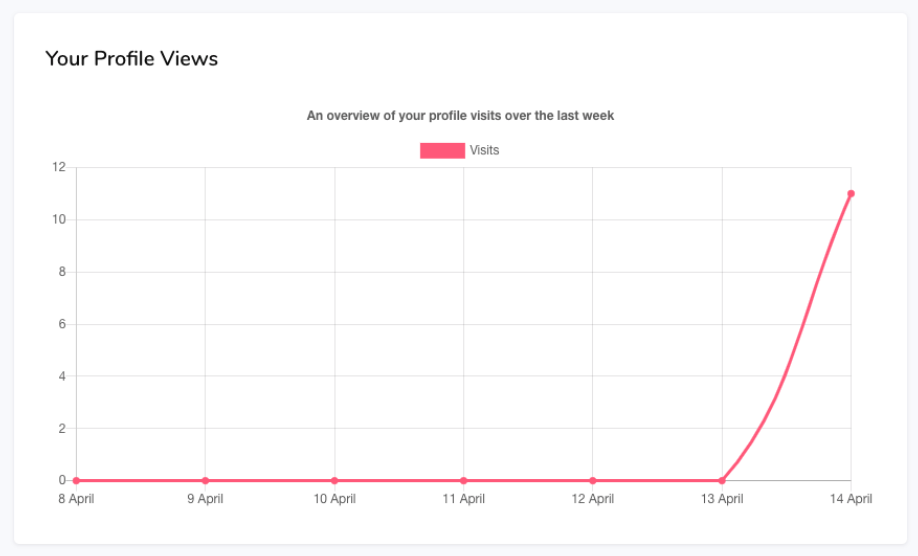

Thank you for your purchase. This documentation file will serve as a general introduction to Edumy, covering topics such as theme installation and configuration, content creation, and general how-tos.
Enjoy the theme!
Created by Cocoon
theme: Edumy
platform: Moodle
updated: October 2021
General information
About Edumy
Edumy is a modern education and LMS Moodle theme for educational institutions and establishments. With a pixel-perfect design and top notch support as standard, Edumy is the perfect theme for your next Moodle project.
Edumy is fully-responsive, standards compliant and easy to customize.
Your purchase
This documentation file will serve as a general introduction to Edumy, providing instructions on topics such as installation, theme configuration, content creation, custom modifications and general how-tos.
Edumy for Moodle has been built by Created by Cocoon, a developer of premium CMS themes and provider of forward-thinking digital solutions.
The theme's download package contains the following directories:
Documentation - Help files for theme installation, use and customization
Demo Installation - The full Moodle installation package, complete with Edumy and all blocks and plugins installed and pre-configured
Existing Installations - The packages required to install Edumy on an existing Moodle website
Licensing - Licenses and legal information pertaining to the theme's use
If you are creating a new Moodle site, we highly recommend that you install Edumy using our Demo Installation package and instructions. If you have an existing Moodle site, please follow the
'Existing Installation' instructions.
Please note that demo/sample data is only installed when using the Demo Installation package. As such, if you are using the Existing Installation instructions, please refer to the 'Creating Content' section
below for guidance on how to create content using Edumy.
Demo installation
The following instructions will show you how to install a fresh instance of Moodle, complete with Edumy installed, all modules pre-configured, and extensive demo content with placeholder images.
1. Create database
Unless you plan on using an existing database, you must create a new database for your Moodle installation.
The database can be named however you wish. The database can be created via phpMyAdmin (as shown below), or via another database manager such as cPanel or Parallels Plesk.
(You may also need to create a new database user, unless you plan on using an existing one.)
Immediately proceed to step 2, below.
2. Populate database
Import the SQL file, named cocoon_edumy.sql (located in the 'Demo Installation' folder in your theme download package), into your new database. This can be accomplished via phpMyAdmin, as shown below.
Ensure that your server is configured to allow uploads of at least 5.4 MB, so that the SQL file can be fully imported.
Immediately proceed to step 3, below.
3. Upload files
Upload the demo_files.zip archive (located in the Demo Installation folder) to your web server, and extract it using either cPanel, another administration interface, or command line.
Alternatively, you can manually upload the entire contents of the uncompressed demo_files folder to your web server. Ensure that all hidden files are also transferred, as these may be hidden in your computer's file browser. We
recommend using an FTP client, such as FileZilla.
Immediately proceed to step 4, below.
4. Upload moodledata
Upload the moodledata.zip archive (located in the Demo Installation folder) to your web server, outside your web root. Moodle requires that the moodledata folder is not publicly accessible.
Once uploaded, extract the archive using either cPanel, another administration interface, or command line.
Alternatively, you can manually upload the entire contents of the uncompressed moodledata folder to your web server. Ensure that all hidden files are also transferred, as these may be hidden in your computer's file browser. We
recommend using an FTP client, such as FileZilla.
Your web server should have read-write permissions to the moodledata directory. For further instructions, please visit Moodle.org.
Immediately proceed to step 5, below.
5. Configure config.php
You must now configure Moodle's config.php file to reflect your new database credentials and moodledata directory location, so that Moodle can connect to the database.
It is mandatory to complete all of the following steps, in order for your website to work correctly.
Open the config.php file located in the Moodle root on your web server.
On lines 10 to 12, edit the database name, user, and password to match the new database credentials you set up in Step 1.
Ensure that the database prefix remains as "cocoon_".
You may also need to edit the database port and host to match that of your server, and the database collation to match that of the new database you created in Step 1.
On line 20, change the website root to your website URL, or your localhost address (e.g. http://localhost/moodle, or http://localhost:8888/moodle)
This step is important. If you specify the incorrect web address your website will not display correctly.
On line 21, change the "dataroot" to match the location of the moodledata directory you uploaded in Step 4. This path should be relative to your server root.
On line 24, adjust the "directorypermissions" to the directory permissions set for your moodledata directory (in Step 4). By default, these are 0777. However, they may also be 0775 or 0755, depending on your server configuration. For
further guidance on setting the appropriate permissions, visit Moodle.org
Immediately proceed to step 6, below.
6. Login
Your Edumy demo installation is now complete. You can now login to your new Edumy website with the following administrator credentials.
→ Navigate to {yoursite.com}/login/index.php to login directly.
USERNAME: admin PASSWORD: admin123
Immediately proceed to step 7, below.
7. Purge the Moodle cache
After logging in, navigate directly to {yoursite.com}/admin/purgecaches.php via your web browser's address bar and click the 'Purge all caches' button.
Wait for the page to refresh and reload completely. Once the page has refreshed and loaded completely, the caches have been succesfully purged.
This process may take several minutes.
Immediately proceed to step 8, below.
8. Complete!
Your installation of Edumy is officially complete! Happy site building! (Please don't forget to change the administrator password first.)
Existing installations
Edumy can be installed on existing Moodle installations, and the process is quick and easy. You'll be up and running in no time.
Ensure that you have a fresh, working backup of your existing Moodle instance (files and database) before proceeding.
1. Upload the theme
The standalone theme is located in the 'Existing Installations/theme' folder.
→ Unzip the edumy.zip archive, and upload the extracted folder to the /theme directory in your Moodle root.
You should now have the standalone Edumy theme at this location on your web server: /theme/edumy
Immediately proceed to step 2, below.
2. Upload required blocks
Edumy ships with over 50 custom blocks to help you create feature-rich pages on your Moodle site. It is recommended that all custom blocks are installed.
The blocks you must install are located in the 'Existing Installations/blocks' folder.
Upload the blocks to your Moodle blocks directory, located at /blocks in your Moodle root.
Immediately proceed to step 3, below.
3. Upload recommended plugins
The following third-party plugins are recommended:
The recommended plugins are located in the 'Existing Installations/local' folder.
Upload the plugins to your Moodle plugins directory, located at /local in your Moodle root.
Immediately proceed to step 4, below.
4. Installation
After following the steps above, you must install the uploaded theme, blocks, and plugins:
Log into your Moodle site (as an administrator), and go to Site administration > Notifications (*your_moodle_address*/admin/index.php)
There should be 57 new installations pending your attention. Scroll to the bottom of the page and click "Upgrade Moodle Database now".
Wait for Moodle to install the new plugins. This might take several minutes.
Follow the on-screen instructions to complete the installation.
You may be prompted to configure new settings during the installation process. You can safely ignore this for now, and proceed by clicking "Continue" at the bottom of the page. You will be able to configure these
settings at a later time.
Upon successful installation, you will be taken to the Site administration > Notifications page.
Immediately proceed to step 5, below.
5. Activation
Everything you need to build or extend your Moodle site with Edumy is now installed.
But first, let's activate your new theme:
→ Navigate to Site administration > Appearance > Themes > Theme selector, and change the default theme to Edumy.
Upon successful activation, a "New theme saved" page will be displayed. Click Continue.
Edumy's Theme Settings are important to your website's functionality, as they dictate how the theme will look and behave.
→ Navigate to Site administration > Appearance > Themes > Edumy
General settings
The General settings panel allows you to configure styles for the Moodle blog and course listing pages.
Header settings
The Header settings panel provides settings for configuring your website header. It's important to complete every field. Please note that the fields displayed on your website frontend vary depending on the chosen header style.
Footer settings
The Footer settings panel provides settings for configuring your website footer. It's important to complete every field. Please note that the fields displayed on your website frontend vary depending on the chosen footer style.
Social settings
The Social settings panel provides settings for configuring the social profile links for your website.
Theme structure
This section will provide further guidance on how Edumy works, and how content should be managed.
Pages
Edumy includes styling for all common areas of a typical Moodle installation, including (but not limited to):
Front page
Custom Pages (Activities)
Course categories
Single courses (and sub-pages like Participants)
Calendar
Login and Email-based Self Registration
Blogs
Dashboard (Messages, Profile, Settings, etc)
These styles are automatically applied on activation of the theme.
However, there are many more possibilities with Edumy.
One of Edumy's greatest features is its intuitive use of custom blocks, which allow you to create feature-rich pages anywhere on your Moodle site.
You can assign any of the custom blocks below to one of Edumy's included regions:
Regions
Fullwidth top
Fullwidth bottom
Above content
Below content
Sidebar left
Sidebar right
Please note that certain blocks are best-placed in the fullwidth regions, and others in the sidebar regions.
Blocks
Edumy ships with over 50 custom blocks, which can be assigned to any region within the theme.
Custom blocks have [Cocoon] in the title, for easy recognition:
[Cocoon] About (Text 2 Columns) - Two columns of simple text.
[Cocoon] About (Text with Image) - One column of text with an image.
[Cocoon] Action Panels - Two call-to-action panels.
[Cocoon] Contact Form - A contact form with a Google map.
[Cocoon] Course Details - For use on single course pages: details about a course.
[Cocoon] Course Features - For use on single course pages: features of a course.
[Cocoon] Course Info - For use on single course pages: information about a course.
[Cocoon] Course Instructor - For use on single course pages: information about a course instructor.
[Cocoon] Course Intro - For use on single course pages: introduction to a course.
[Cocoon] Course Overview - For use on single course pages: the overview of a course.
[Cocoon] Courses List - For use in a sidebar region: a simple list of courses.
[Cocoon] Courses Slider - A slider of chosen courses.
[Cocoon] Event Body - For use on single event pages: the body text of an event.
[Cocoon] Event Contact - For use on single event pages: the contact details for the event.
[Cocoon] Event Details - For use on single event pages: the details of an event.
[Cocoon] Event Slider - A slider of events.
[Cocoon] FAQs - A list of expandable FAQs.
[Cocoon] Featured Blog Posts Slider - A list of featured blog posts.
[Cocoon] Featured Event - A featured event with text and an image.
[Cocoon] Featured Image - A featured image.
[Cocoon] Featured Text - Text which is featured.
[Cocoon] Features - A four-column block of features and icons.
[Cocoon] Gallery - A gallery of images with lightbox popups.
[Cocoon] Gallery Slider - A sliding gallery of images.
[Cocoon] Global Search (sidebar) - Edumy-styled sidebar search block.
[Cocoon] Global Search (navbar) - Edumy-styled navbar search block.
[Cocoon] Hero 1 - The first hero style.
[Cocoon] Hero 2 - The second hero style.
[Cocoon] Hero 3 (with Search) - The third hero style with a search box.
[Cocoon] Parallax - A parallax section with text and an image.
[Cocoon] Parallax apps - A parallax section with an image and links to your apps.
[Cocoon] Parallax Counters - A parallax section with an image and four counters.
[Cocoon] Parallax White - A white parallax section with text and an image.
[Cocoon] Partners - A block of partner logos.
[Cocoon] Pills - Four columned text with images.
[Cocoon] Programs - Four columns and an image of your programs.
[Cocoon] Recent blog posts - Recent blog posts in two columns (slider and static).
[Cocoon] Recent blog posts list - For use in the sidebar regions: list of recent blog posts.
[Cocoon] Recent blog posts slider - A large slider of recent blog posts.
[Cocoon] Related Courses - For use on single course pages: related courses.
[Cocoon] Simple Counters - Four counters on a white background.
[Cocoon] Slider style 1 - The first hero slider style.
[Cocoon] Slider style 2 - The second hero slider style.
[Cocoon] Slider style 3 - The third hero slider style.
[Cocoon] Slider style 4 - The fourth hero slider style.
[Cocoon] Subscribe - For use with the Contact Form plugin: A newsletter susbcription block.
[Cocoon] Tablets - Four responsive parallax tablets with icons.
[Cocoon] Testimonials slider - A slider of user testimonials.
[Cocoon] Users - For use in any main content region: A grid of selected users.
[Cocoon] Users Slider - A slider of selected users.
[Cocoon] Users Slider Round - A round slider of selected users.
Each block is configurable independently and can be added to any Moodle page. You can also configure blocks to be displayed site-wide.
Main menu
To create a main menu, you should add items to the Moodle custom menu.
→ Navigate to Site administration > Appearance > Themes > Theme settings > Custom menu items to configure your main menu.
You can also customize the user navigation on the same page:
Multilingual Menu
To enable the multilingual menu/language switcher, Navigate to Site administration > Language > Language Settings > Display Language Menu.
Toggling this option to 'Yes' will enable the presence of the multilingual language switcher on your site's frontend.
Ensure that you have also installed any associated Language Packs correctly, as the language switcher may not display if no additional Language Packs are installed.
Creating content
Edumy includes styling for many common areas in a typical Moodle installation.
However, it's also possible to create completely custom pages using the custom blocks shipped with Edumy. Please refer to Theme structure for reference.
To create a custom page, you should first enable the "Topics" section on the Moodle frontpage:
→ Navigate to Site administration > Front page > Front page settings and enable "Include a topic section":
→ Navigate to your front page and click "Add an activity or resource" in the topics section:
→ Add a new "Page", under "Resources".
You're now able to create and assign custom blocks to your page. Please refer to Theme structure for a full list of available custom blocks.
Cocoon Live Customizer
Edumy ships with the exclusive Cocoon Live Customizer.
Cocoon Live Customizer allows you to build content-rich pages using drag-and-drop real-time editing.
Not all custom blocks support Live Customizer, and these can be configured using the standard method.
To enable Live Customizer:
First, turn editing on, either via the "Page Settings" button on the frontpage (in the bottom left corner), or click "Blocks Editing On" from the Site administration page.
Next, click "+Add a Block" from the Edumy user settings and navigation dropdown menu, beside the profile picture in the main menu bar.
Search for "Live Customizer" in the block search form, and you will find a list of blocks that currently support Cocoon Live Customizer.
Click the block you wish to add, and click "Select" to add it to the page.
You can now enter Live Customizer using the green button beside the new block.
Please refer to Theme structure for a full list of available custom blocks.
Cocoon Form Builder
Edumy ships with the exclusive Cocoon Form Builder plugin for Moodle.
Cocoon Form Builder allows you to easily create webforms for your Moodle site using drag-and-drop.
To create forms with Cocoon Form Builder:
First, navigate to Site administration > Plugins > Local > Cocoon Form Builder.
From this page, you will see a list of all existing forms, and the option to "Add a Form".
After saving your form, add the [Cocoon] Form block to any page on your Moodle site, and reference the desired form to display.
Creating Forms
The modern interface of Cocoon Form Builder allows quick and easy creation of forms by drag-and-drop.
Simply drag fields from the right panel into the main content area in order to arrange your form.
Custom block types
The theme comes with an array of custom blocks for your convenience.
To create a custom block, you must first switch Block editing on.
→ Navigate to Site administration and turn block editing on:
You can now add blocks to any page using the "+ Add Block" link in the user navigation menu:
Edumy's 50+ custom blocks are marked with [Cocoon]:
[Cocoon] About (Text 2 Columns)
[Cocoon] About (Text with Image)
[Cocoon] Action Panels
[Cocoon] Boxes
[Cocoon] Contact Form
[Cocoon] Courses Slider
[Cocoon] Course Categories
[Cocoon] Course Categories 2
[Cocoon] Course Categories 3
[Cocoon] Course Enrolment
[Cocoon] Course Enrolment (Custom)
[Cocoon] Course Features
[Cocoon] Course Info
[Cocoon] Course Instructor
[Cocoon] Course Intro
[Cocoon] Course Overview
[Cocoon] Course Categories List
[Cocoon] Courses Slider
[Cocoon] Event Body
[Cocoon] Event Contact
[Cocoon] Event Details
[Cocoon] Event Slider
[Cocoon] FAQs
[Cocoon] Featured Blog Posts Slider
[Cocoon] Featured Courses
[Cocoon] Featured Courses (Masonry)
[Cocoon] Featured Event
[Cocoon] Features
[Cocoon] Gallery
[Cocoon] Gallery Slider
[Cocoon] Global Search (sidebar)
[Cocoon] Global Search (navbar)
[Cocoon] Hero 1
[Cocoon] Hero 2
[Cocoon] Hero 3 (with search)
[Cocoon] My Profile Views

[Cocoon] My News
[Cocoon] My Orders
[Cocoon] Parallax
[Cocoon] Parallax Apps
[Cocoon] Parallax Counters
[Cocoon] Parallax Features
[Cocoon] Parallax White
[Cocoon] Parallax Testimonials
[Cocoon] Partners
[Cocoon] Pills
[Cocoon] Price Tables
[Cocoon] Programs
[Cocoon] Recent blog posts
[Cocoon] Recent blog posts list
[Cocoon] Recent blog posts slider
[Cocoon] Related Courses
[Cocoon] Services
[Cocoon] Simple Counters
[Cocoon] Slider style 1
[Cocoon] Slider style 2
[Cocoon] Slider style 3
[Cocoon] Slider style 4
[Cocoon] Slider style 5
[Cocoon] Steps
[Cocoon] Subscribe
[Cocoon] Tablets
[Cocoon] Testimonials slider
[Cocoon] Users
[Cocoon] Users Slider
[Cocoon] Users Slider (Large)
[Cocoon] Users Slider (Round)
Course payment setup
Edumy supports paid course enrollment using Moodle's PayPal Enrolment method.
We'll guide you on how to setup and configure PayPal Enrolment on your Edumy Moodle site.
1. Enable the PayPal Enrolment method
First, you must enable PayPal Enrolment. You'll also have the opportunity to configure site-wide settings for PayPal Enrolment.
→ Navigate to Site administration > Plugins > Enrolments > Manage enrol plugins and enable PayPal Enrolment (by clicking the eye icon):
2. Configure site-wide PayPal settings
Now you can configure site-wide settings for PayPal. This is important, as you want your payments sent to the right place.
To configure site-wide settings for PayPal on your Moodle site, click the "Settings" link beside "PayPal".
3. Important PayPal Settings
All configuration options for PayPal are important, but the key ones are:
PayPal Business Email (use the email address linked to your PayPal Business Account).
Set "Allow PayPal Enrolments" to Yes.
Set the default "Enrol cost" and "Currency" for your courses.
4. Enable PayPal Enrolment for each paid course
To allow PayPal enrolments for specific courses, follow these steps:
Navigate to the "Participants" page for a given course
From the course settings menu, click "Enrolment methods"
If PayPal is not already listed as an enrolment method, select "PayPal" from the "Add method" dropdown on the page:
You can also adjust the PayPal settings for the specific course, as shown below:
Lastly, add the [Cocoon] Course Enrolment block to the course main page, so that users will be shown the enrolment details and purchase link, as shown below.
If all of your courses require payment, we recommend adding the block once, and configuring it to display on "any type of course main page". This prevents you from having to add the block to every course.
Further Customization
Cocoon Live Customizer provides extensive support for the customization of certain custom blocks.
However, you may wish to further customize Edumy theme styles or custom blocks with custom CSS changes.
In the Edumy theme settings panel, various fields are provided for custom CSS and JavaScript code.
The fields provided via the Edumy theme settings panel (Site administration > Appearance > Edumy > Advanced) are:
Custom CSS - styles applied to the Edumy frontend theme
Custom CSS Dashboard - styles applied to the Edumy dashboard and focus themes
Custom JavaScript - JavaScript applied to the Edumy frontend theme
Custom JavaScript Dashboard - JavaScript applied to the Edumy dashboard and focus themes
When using custom CSS via these fields, please do not include the style tag, as this is provided as a wrapper by default.
When using custom JavaScript via these fields, please do not include the script tag, as this is provided as a wrapper by default.
If you prefer to include your custom CSS files via a hard-coded file, rather than via the Theme Settings, you can edit the custom.css file located at: /theme/edumy/style/custom.css.
Please note that your custom.css file may be overwritten when updating Edumy theme. For this purpose, we recommend backing up your custom.css file before updating Edumy theme, in case you need to
restore it after the update.
Bootstrap Buttons:
The HTML codes below can be used to add styled Bootstrap buttons anywhere on your Moodle site.
Miscellaneous updates & improvements, new blocks, introducing Cocoon Form Builder.
Version 2.5.1 (17 February 2021)
Miscellaneous updates & improvements.
Version 2.5.0 (01 February 2021)
Solidify updates into Edumy 2.5.0
Version 2.3.1 (01 February 2021)
Minor updates and improvements to Edumy theme.
Version 2.3.0 (30 January 2021)
Extensive updates & improvements to Edumy theme. All blocks updated. 17 new blocks.
Version 2.2.1 (25 November 2020)
Updates to Cocoon Live Customizer
Version 2.2.0 (12 November 2020)
Updated for Moodle 3.10
Version 2.1.6 - 2.1.7 (10 November 2020)
Miscellaneous fixes and improvements.
Version 2.1.5 (29 September 2020)
Miscellaneous fixes, updates & improvements.
Version 2.1.4 (08 September 2020)
Miscellaneous fixes.
Version 2.1.3 (02 September 2020)
Miscellaneous fixes.
Version 2.1.2 (29 August 2020)
Miscellaneous fixes.
Version 2.1.1 (18 August 2020)
Minor fixes and improvements. Various block updates.
Version 2.1.0 (15 August 2020)
Various updates, new features, and performance enhancements.
Version 2.0.7 (04 August 2020)
Miscellaneous fixes and improvements
Version 2.0.6 (29 July 2020)
Fixes and updates for various blocks
Version 2.0.5 (20 July 2020)
Introducing Moodle 3.7 support for Cocoon Live Customizer
Version 2.0.4 (16 July 2020)
Minor fixes
Version 2.0.3 (15 July 2020)
Minor fixes
Version 2.0.2 (12 July 2020)
Minor updates to Cocoon course handler
Version 2.0.1 (12 July 2020)
New slider settings, autoplay. Live Customizer updates. Miscellaneous fixes and improvements. RTL improvements. Addition of custom.css file.
Version 2.0.0 (06 July 2020)
Edumy v2. New blocks, new headers, new sliders, new footers, and more.
Version 1.6.2 (26 June 2020)
Improvements and fixes to Live Customizer. Updated blocks. New blocks, new sliders, new headers, footers and more. RTL improvements.
Version 1.6.1 (22 June 2020)
Updates to Live Customizer and blocks.
Version 1.6.0 (20 June 2020)
Introducing Cocoon Live Customizer for Moodle 3.8 & 3.9 + new settings, minor bug fixes, Moodle 3.9 improvements, and more.
Version 1.5.0 (15 June 2020)
Moodle 3.9 support
Version 1.4.8 (15 June 2020)
Minor bug fixes, updates, new theme features, support for all paid enrolment methods & more
Version 1.4.7 (09 June 2020)
Slider 5 translations
Introducing Cocoon Content Creator for Moodle
Version 1.4.5 (06 June 2020)
Introducing RTL
Version 1.4.4 (04 June 2020)
Minor fixes + new blocks
Version 1.4.3 (29 May 2020)
New breadcrumb settings
Version 1.4.2 (29 May 2020)
Minor fixes and improvements
Version 1.4.1 (25 May 2020)
Several new block additions
Version 1.4.0 (23 May 2020)
New updates and features
Version 1.3.9 (17 May 2020)
New settings for blocks & Theme Edumy
Version 1.3.8 (14 May 2020)
New theme and block settings
Version 1.3.7 (08 May 2020)
Minor fixes
Version 1.3.6 (08 May 2020)
New features
Version 1.3.5 (04 May 2020)
New theme features and enhancements
Version 1.3.4 (03 May 2020)
Minor updates
Version 1.3.3 (30 April 2020)
New theme settings added & 1200+ new icons & new block settings
Version 1.3.2 (23 April 2020)
New theme settings added
Version 1.3.1 (22 April 2020)
Minor update with new settings additions and new dashboard features
Version 1.3.0 (19 April 2020)
Major Release - All sites running Moodle 3.8 are recommended to upgrade.
Version 1.2.14 (16 April 2020)
Minor updates
Version 1.2.13 (15 April 2020)
Backwards compatibility for plugin update page
Version 1.2.12 (14 April 2020)
Miscellaneous enhancements and improvements
Version 1.2.11 (12 April 2020)
Minor improvements
Version 1.2.10 (11 April 2020)
Minor improvements
Version 1.2.9 (10 April 2020)
Miscellaneous fixes and improvements, new theme settings, reCAPTCHA and more.
Version 1.2.8 (09 April 2020)
Miscellaneous improvements
Version 1.2.7 (07 April 2020)
Minor fixes
Version 1.2.6 (06 April 2020)
Minor improvements and settings additions.
Version 1.2.5 (05 April 2020)
Minor updates.
Version 1.2.4 (05 April 2020)
Minor additions and updates.
Version 1.2.3 (02 April 2020)
Addition of fonts options in Theme Settings.
Version 1.2.2 (02 April 2020)
Extensive updates and improvements to M3.8 versions of theme and blocks.
Version 1.2.1 (29 March 2020)
Extensive updates to M3.8 versions of theme and blocks.
Version 1.2.0 (22 March 2020)
Extensive updates to M3.8 versions of theme and blocks.
Version 1.1.11 (19 March 2020)
Fix to header logotype visibility settings: M3.8 only
Version 1.1.10 (17 March 2020)
Minor theme updates - fixed login page styles
Version 1.1.9 (17 March 2020)
Minor theme & block updates
Version 1.1.8 (16 March 2020)
Updates to all footers, updates to custom blocks.
Version 1.1.7 (14 March 2020)
Extensive theme settings updates - PURGE MOODLE CACHES BEFORE & AFTER UPGRADING.
Version 1.1.6 (12 March 2020)
Minor updates for course category displays
Version 1.1.5 (12 March 2020)
M3.8 & M3.7 - update to cocoon_course_categories block
Version 1.1.4 (10 March 2020)
M3.8 & M3.7 - update to cocoon_course_intro block
Version 1.1.3 (10 March 2020)
M3.8 & M3.7 - extensive block adjustments, filter_multilang2 plugin support for the theme & all blocks
Version 1.1.2 (04 March 2020)
M3.8 & M3.7 - adjustments to main menu bar
Version 1.1.1 (03 March 2020)
M3.8 & M3.7 - fixes to course categories index page
Version 1.1.0 (02 March 2020)
Updates to theme files for Moodle 3.8 and Moodle 3.7
Version 1.0.9 (28 February 2020)
Updates to theme and custom blocks.
Version 1.0.8 (28 February 2020)
Enhancements and improvements for participants pages
Version 1.0.7 (27 February 2020)
Enhancements for frontend course management, page header adjustments, accordion improvements
Version 1.0.6 (26 February 2020)
Improvements to add activity chooser UI
Version 1.0.5 (25 February 2020)
Improvements to courses: forums and weekly
Version 1.0.4 (24 February 2020)
Updates to several theme files.
Version 1.0.3 (23 February 2020)
Changes to several blocks and theme files.
Version 1.0.2 (22 February 2020)
Changes to several blocks and theme files.
New Global search (navbar) block.
Version 1.0.1 (20 February 2020)
Changes to several blocks and theme files.
Version 1.0.0 (18 February 2020)
Initial release
Further support
If you are experiencing trouble, or otherwise have a question or concern beyond the scope of this help file, you may reach us via any of the following means.
We endeavour to respond to all enquiries within 24 hours, Monday to Sunday.
Statement of Support
We will always do our best to leave you satisfied after any support correspondence. We shall provide support for reasonable questions pertaining to the installation and setup of the theme, queries regarding use of the theme's features, and
reports of bugs or technical issues with the product. We aim to respond to all enquiries in a timely fashion, often within 24 hours, Monday to Sunday. We ask that you are patient and polite in exchange for this generous service. Regrettably,
we are unable to provide modification or customization services free of charge.